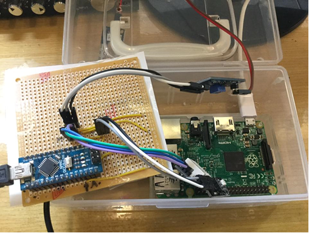
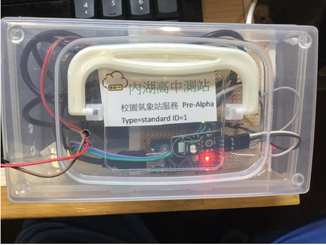
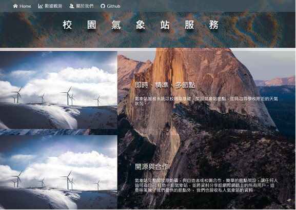
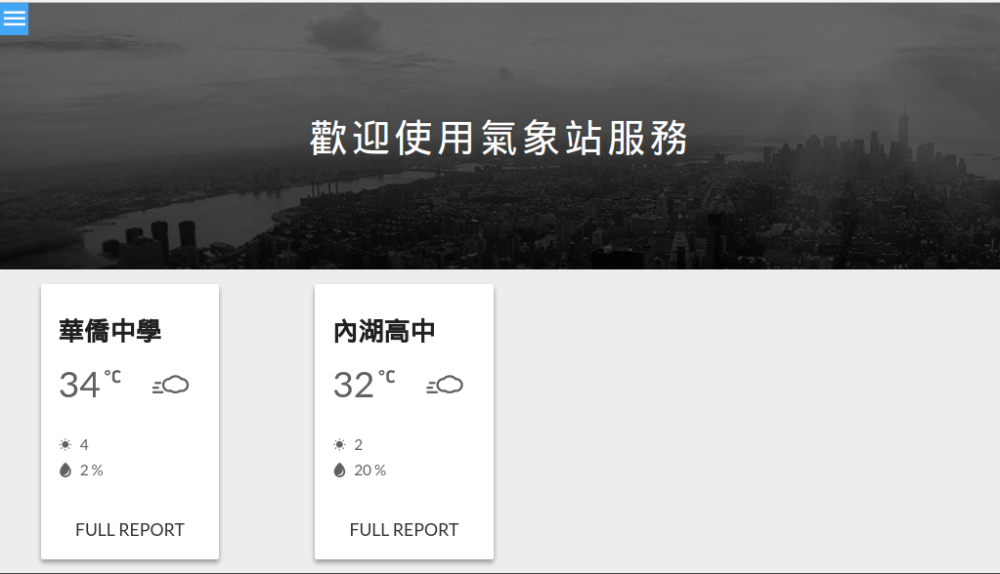

Campus Weather Service
校園氣象站服務
技術細節版
前往簡介版起源
- 氣象資訊都是以市區為單位
- 無法了解學校這個區域的氣象資訊
何不自己架？
Why choose us?
硬體設計者是金城武前端設計者是彭于晏- 簡報很漂亮
- 開放資料 API
Summary
- 使用 樹莓派 及 Arduino 兩種裝置在校園中感測區域性氣象資訊，上傳到 資料庫存放
- 自行架設網頁伺服器，網站搭配圖表呈現觀測數據，提供 API 供使用者存取，建立起 主從架構式(Server-Client) 的校園氣象站服務
System Architecture

System Architecture
- 透過主從分工，各設備各司其職，以達到最大效益
- 硬體層單純由 MCU 與韌體控制
- 驅動層由 Raspberry Pi 用 USB 通訊
- 系統層 紀錄端在 Raspberry Pi 上
- 系統層 伺服端在 HTTP Server 上
- 應用層為 用戶端網頁與 APP
硬體設計
Hardware Development
Photo 1
內部晶片組
Photo 2
盒子外觀
感測資料（目前）
- 溫度 -40℃~125℃ ±0.2℃
- 濕度 0~100%RH ±2%
- 紫外線指數 0~11UV ±1UV
- 雨水感測 True/False
- 光強度(相對) 分成 1024 個單位
感測資料（未來）
- PM2.5
- PM1.0
- PM10
- 大氣壓力
- 更精確的光強度(以 燭光為單位，而非相對數值)
特性
- 系統穩定與優化
- 基於 openWRT 的輕量化系統
- 友善的使用者 安裝腳本
- 模組化
後端開發
Backend Development
語言？
Python
Framwork?
Django
Database?
MariaDB
Construction
模型 Model
視圖 View
模板 Template
路由 Router
模型 Model
- 定義 資料表
視圖 View
- 擷取資料
- 連結
Model.py內的資料表 - 儲存資料進資料庫
- 資料視覺化
模板 Templates
- 使用
View.py內的資料 呈現資料視覺化
路由 Router
- 輸入網址列對應
View.py中的函式
Construction
模型 Modelmodel's function and put these argument into function.controller
前端開發
Frontend Development
UI Design
CSS Devolpment: SASS
Media query: Breakpoint
Webicon font: IcoMoon
View Render: Vue.js
+
GulpAuto build & Livereload
TODO
- 網頁架構改為 SPA(Single Page Application)
- 使用前端框架的網格，如 Bootstrap, Fondation
- 動態繪製圖表 by d3.js, chart.js, etc
Web UI
Index
Web UI - Data
Cooperation Schools
- 國立華僑中學
- 中山女高
Source code
Hardware Project
https://github.com/oxygen-TW/Weather-StationDjango Server
https://github.com/cjchengtw/campus-weather-stationNode.js API Server
https://github.com/junyussh/weather-apiFrontend Website
https://github.com/junyussh/weather-viewQuestion Time
Thanks for listening
Checkout our Github